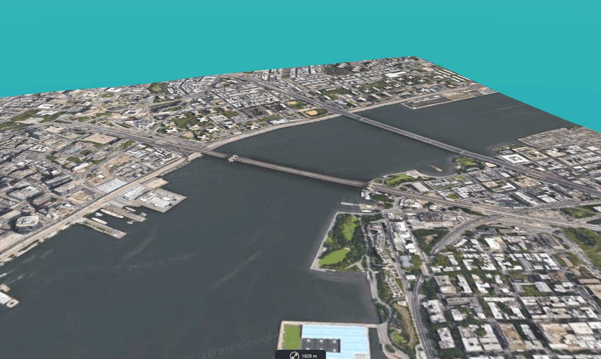
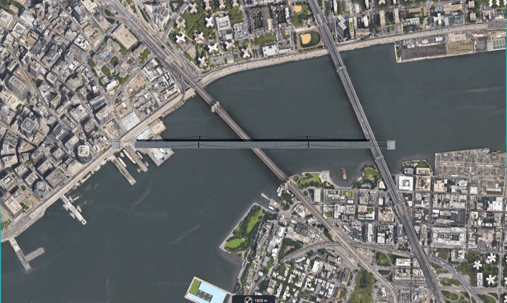
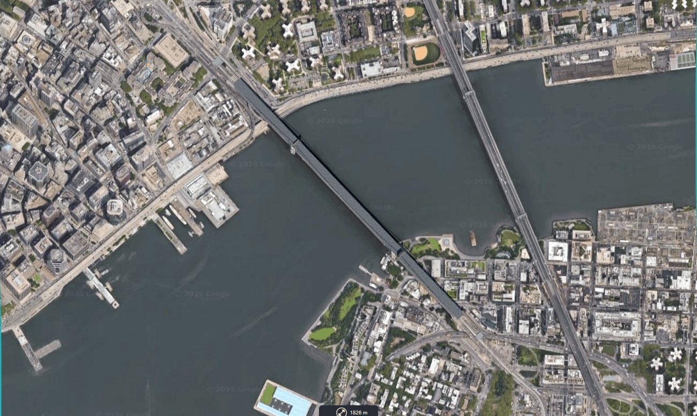
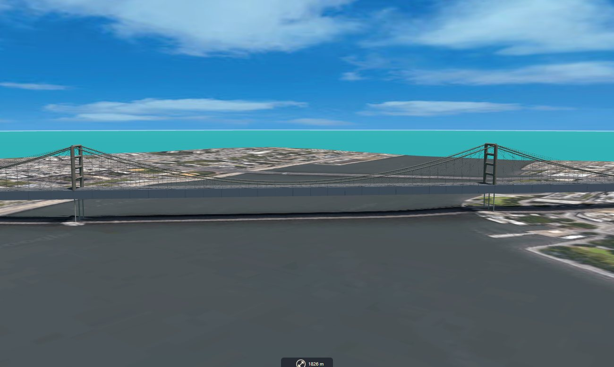
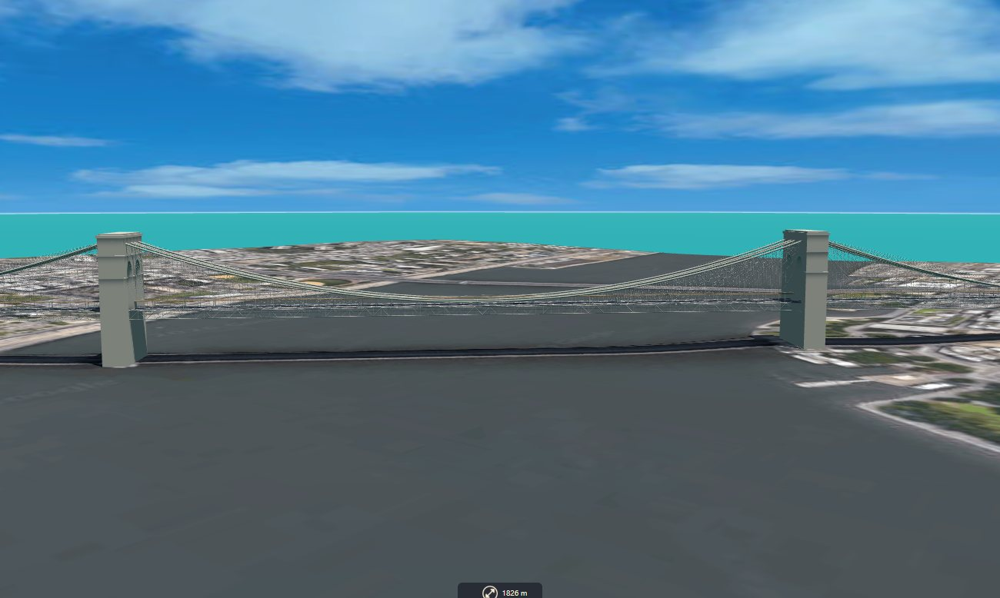
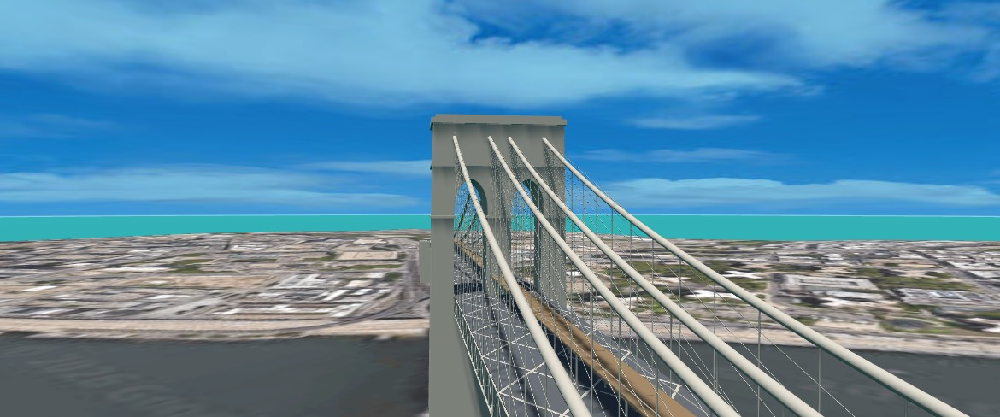
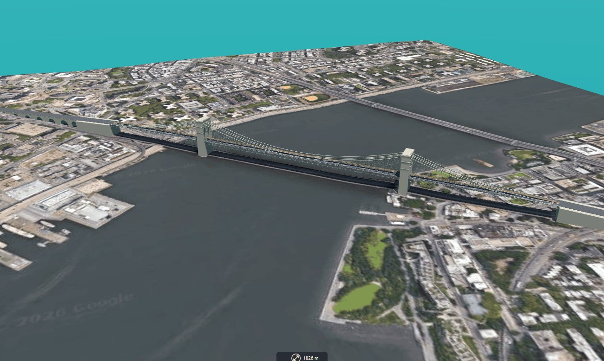
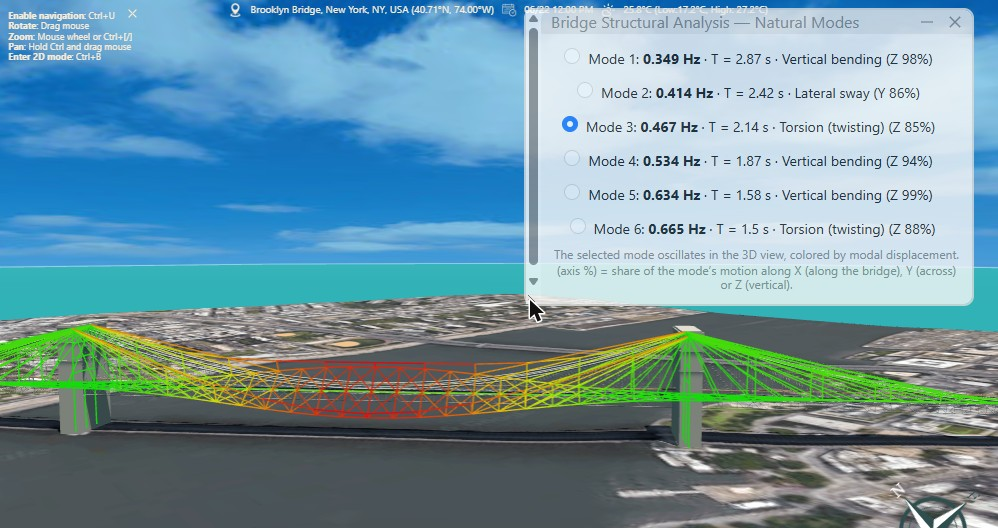
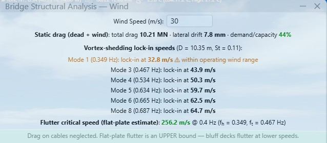
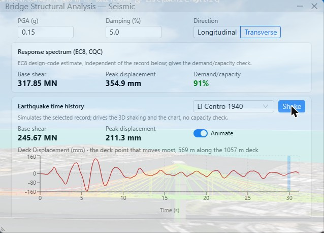

Building bridges with AI
Collaborate with the AI Assistant to design a bridge and test it with finite-element analysis
Could AI design the Brooklyn Bridge from scratch, reasoning the way its engineers did? A famous bridge is shaped by its site and its time. The Brooklyn Bridge had to cross the East River, a tidal strait full of sailing ships, in a single span longer than any built before it, with the stone and steel wire of the 1870s.
Bridges in Aladdin are parametric structures (girder, truss, arch, cable‑stayed or suspension) that a structural engine can load, shake and push to failure. This article walks through doing that with the AI Assistant. The same approach works for other bridges.
The design happens in a chat, one stage per turn: site, structural form, main dimensions, alignment and details. The assistant explains each decision and waits for you before going on. After that you can keep refining the bridge in plain language, and ask the same assistant to run finite‑element analyses on it.
Engineering educators will recognize the rhythm. In guided design, developed by Charles Wales at West Virginia University, students work through an open‑ended problem one decision at a time, and see how an expert handled each step before taking the next. The session below runs the other way around: the assistant makes each decision and you review it. And because the bridge is named at the start, it covers the later part of that process (gathering information, working out the details and testing the result) rather than choosing among alternatives.
The session starts with one request: “Let’s build the Brooklyn Bridge step by step, from scratch, one stage per turn.” The assistant works out the bridge from what it knows about the real one and what it can find on the map. This is the result:
The next five sections follow the build turn by turn. In short, it went like this (the assistant’s replies are shortened; the full text is in the file):
- YouLet’s build the Brooklyn Bridge step by step, from scratch, one stage per turn.
- AssistantStage 1 — the site. The scene is set to the Brooklyn Bridge in New York, with satellite imagery and real ground relief. The OpenStreetMap survey puts the bridge’s center at the scene origin, with a mapped length of about 1,053 m and a bearing of 136.4°. Nothing is built yet. Go on to the structural form?
- YouGood. Next stage.
- AssistantStage 2 — the form. A suspension bridge: the deck hangs from main cables draped over two towers, with shorter side spans running to the shores. The towers also carry diagonal stays, which makes it a suspension and cable‑stayed hybrid. I’ll set the main span to about 486 m and the side spans to about 283 m each.
- YouNext.
- AssistantStage 3 — the dimensions. The bridge is built at the mapped site: a 1,057 m deck, 26 m wide, 36.3 m above the water, on two towers. The side spans came out at about 269 m each and the main span at about 519 m. I haven’t aligned it to the surveyed line yet.
- YouNext.
- AssistantStage 4 — alignment. The bridge is now rotated to −46.4°, which matches the survey’s 136.4° bearing. In the top view it follows the mapped crossing over the river.
- YouNext.
- AssistantStage 5 — details and structural check. Deep stiffening girders, twin towers, vertical hangers, earth anchorages and six diagonal stays per tower. Under traffic the deck deflects 195.5 mm and the most heavily loaded member is at 37% of its capacity. The model does not reproduce the stone Gothic towers and their pointed arches.
Stage 1: The site
The assistant looks the bridge up on OpenStreetMap, sets the scene’s location to it, turns on the satellite map and fetches the real ground relief. The lookup returns the surveyed crossing: where its center is, how long it is (about 1,053 m between the anchorages) and which way it points (a compass bearing of 136.4°, roughly northwest to southeast). Nothing is built in this stage, but those three numbers decide a lot of what follows.

Stage 2: The form
The second turn adds no geometry. The assistant names the form: a suspension bridge with two towers, whose towers also carry diagonal stays. Its reply is short, so here is the reasoning behind that form:
- The span. The main span is 486 m, the longest in the world when the bridge opened in 1883. Only a suspension bridge could reach that far at the time.
- The river. The East River was one of the busiest waterways in the country, so the channel had to stay clear and the deck had to pass above the masts of sailing ships. The two towers stand near the shores and nothing stands between them.
- The stays. Suspension bridges of that era had a record of being wrecked by wind. John Roebling added diagonal stays from the towers to the deck, so the deck is held two ways at once.
- The towers. They are stone, the material of the time for something that tall and that heavily loaded. Almost all of the bridge’s weight comes down through them.
This is a good stage to ask questions. Ask “why not an arch?” and the assistant explains thrust and abutments before anything is built.
Stage 3: The dimensions
Now the bridge goes up, built mostly from the real bridge’s published figures:
| Dimension | Real bridge | AI’s model |
|---|---|---|
| Main span | 486 m | 488 m (see below) |
| Side spans | 283 m each | 284 m each (see below) |
| Overall length | 1,825 m | 1,829 m (after turn 10) |
| Deck width | 26 m | 26 m |
| Deck above the water | 41 m at mid‑span | 36.3 m |
| Towers above the water | 84 m | 84.8 m |
The spans need an explanation. The assistant asked for the real proportions, but its reply gives a 519 m main span, 33 m too long, and its stage‑5 reply gives 528.5 m. When this session was recorded, Aladdin could stand a suspension bridge’s towers only at certain points along the deck, so the towers landed about 15 to 20 m inland of the real ones. We have since changed Aladdin to stand the towers exactly where they are asked for. The saved model now opens with a 488 m main span and 284 m side spans, within 2 m of the real bridge.
The assistant asked for 486 m and reported 519 m. It read the model back after building it and reported what Aladdin had built, not what it had intended. That is how the limitation came to light.
Stage 4: Alignment
The bridge from stage 3 had the right size and the wrong heading: it lay east–west across the river. The assistant did not judge the direction from the photo. It asked OpenStreetMap again, got the surveyed bearing of 136.4°, turned the deck to match (a rotation of −46.4° in Aladdin, which measures angles counter‑clockwise from east) and then checked the result in a top‑down view.


The alignment is close but not exact. OpenStreetMap also maps the two stone towers, and they stand about 9 m to the southwest of the deck line the assistant used. A later turn moved the bridge over (see below). It is worth checking the scene yourself rather than relying on the assistant’s description.
Stage 5: Details
The last build turn finished the structure: deep stiffening girders under the deck, vertical hangers, earth anchorages and six diagonal stays per tower. Then the assistant ran a static check without being asked. Under traffic the deck deflected 195.5 mm, about 1/2,700 of the span, and the most heavily loaded member was working at 37% of its capacity.
It also said what the model left out: the stone Gothic towers with their pointed arches. At that point the towers were plain steel frames, and the bridge looked like any suspension bridge.
Five more turns: making it the Brooklyn Bridge
The five stages produce a sound structure in the right place. The next five turns were ordinary requests in plain language, each ending with “then check the structure again”:
- YouMake it look more like the real Brooklyn Bridge: give it stone masonry towers with the pointed arches, color the towers light stone and the cables a pale tan, and make the diagonal stays easier to see.
- AssistantDone: masonry towers with pointed arches, and more prominent stays. The towers and cables share one color in this model, so I applied a light stone tan to both.
- YouThe deck still looks like a solid slab. Make it an open stiffening truss like the real Brooklyn Bridge.
- AssistantThe deck now has an open stiffening truss instead of solid plate girders.
- YouCloser still: give it the real bridge’s four main cables, the raised pedestrian promenade down the middle, and a denser web of thinner diagonal stays, about 20 per side.
- AssistantDone. The promenade is visual only, and the analysis represents the four cables as two cable planes.
- YouThe stays are so dense they blur into a haze. Go back to about 12 per side. Also, OpenStreetMap maps the two stone towers about 9 m southwest of the deck’s centerline, so move the bridge onto them.
- AssistantReduced the stays to 12 per side and shifted the bridge 9 m southwest, keeping its −46.4° axis.
- YouThe real bridge doesn’t stop at the shore: add its stone approach spans, about 476 m on the Manhattan end and about 296 m on the Brooklyn end.
- AssistantAdded stone‑arcade approaches at both ends. They are visual and aren’t included in the structural analysis. The check now reports 119.2 mm of deflection and 43% peak utilization.


Several of these features did not exist in Aladdin when the session began. The stone towers, the open truss, the four cables, the promenade and the arcades were added to Aladdin between turns, after the assistant said what it could not show. The assistant then used each one as soon as it was available.

The assistant was open about what is only for looks. The promenade and the approaches are drawn but not analyzed, and the four cables are analyzed as two. (The truss deck is also analyzed as girders of the same depth.) The structural numbers moved when the structure did: the deflection fell from 195.5 mm to 150.9 mm when the stone towers and heavier stays went in, and it was down to 119.2 mm by the time the main span had shortened to its real length.

Analyze the bridge
Aladdin’s bridges are structural models: the deck, cables, hangers and towers are members with real cross‑sections and material properties. That means you can analyze the finished bridge by asking in the same chat:
Six things to ask for
Each one is answered by Aladdin’s finite‑element model of the bridge.
-
Static
How much does the deck sag under traffic?
Loads the deck with its own weight and traffic, and reports how far it deflects and how hard each member is working compared with what it can carry.
-
Natural modesShown below
What are its natural frequencies?
Finds the shapes the bridge likes to vibrate in — vertical bending, swaying, twisting — and how fast.
-
WindShown below
What does a strong wind do to it?
Measures how far the deck is pushed sideways, and estimates flutter: the wind speed at which a long, light deck starts to twist on its own. On real long spans, wind is the classic danger.
-
SeismicShown below
Could it survive a big earthquake?
Gives a quick verdict from a design response spectrum, or runs a recorded earthquake through the structure step by step while you watch the bridge shake.
-
Pushover collapse
How much load would it take to break it?
Keeps increasing the load until members yield and the structure collapses, which tells you its real safety margin.
-
Can you make it cheaper without making it unsafe?
Evolves the sizes of the deck, piers and towers to cut the cost of steel, cable and concrete while the strength, seismic and deflection checks still pass. It starts from your design, so its answer is never worse.
Three analyses of this bridge
We asked the assistant to run the natural‑modes, wind and seismic analyses on the bridge from this session. First, the natural modes:

The bridge’s slowest motion is vertical: the main span bounces up and down once every 2.9 seconds (0.349 Hz). A sideways sway comes next at 0.414 Hz, and the lowest twisting mode is third, at 0.467 Hz. These are quick for a suspension bridge. The span is short by modern standards, and the assistant gave the model a 10 m‑deep stiffening structure, which makes the deck stiff. The twisting mode matters for wind. In a strong crosswind a long deck can start twisting on its own, which is called flutter; twisting destroyed the Tacoma Narrows Bridge in 1940. Here the twisting frequency is about 1.34 times the first bending frequency.
Wind was Roebling’s main worry, and the diagonal stays and the stiffening trusses were his answer to it. The wind analysis used Aladdin’s default design wind of 30 m/s (108 km/h). The deck moved 7.8 mm sideways, and the most heavily loaded member reached 44% of its capacity, barely more than under traffic alone. Aladdin’s flat‑plate estimate puts the start of flutter at 256 m/s, more than eight times the design wind. That is an upper bound, because a real deck flutters at a lower speed than a flat plate, but the margin is very large. The flutter frequency, 0.4 Hz, lies between the first bending and twisting frequencies, as it should when the two motions couple.

Last, an earthquake. New York is not earthquake country, but it is not immune either: a quake of about magnitude 5 struck the area in 1884, the year after the bridge opened, and a magnitude 4.8 quake in New Jersey in 2024 was felt across the city. We asked the assistant to shake the model sideways, across the river, at a peak ground acceleration of 0.15 g. That figure is our own round number for a rare, strong shake in a low‑hazard region, not a code value for New York.
Aladdin first gives a quick check against a design response spectrum, at 0.15 g and 5% damping. It put the deck’s peak sideways movement at 355 mm, the base shear at 318 MN and the most heavily loaded member at 91% of its capacity. That is a pass with little to spare, and it is the most interesting number in the session. The same check at 0.32 g, a California‑level shake, gives 160%: overstressed.
We asked the assistant why the figure is so high at a modest acceleration. It answered that the 91% is the combined demand of the bridge’s own weight, traffic and the earthquake, and the static check had already found members at 43% under weight and traffic alone. It also said plainly that it could not tell which member governs, because the analysis reports only the maximum. A stone‑towered bridge is heavy, and in an earthquake weight is what generates force, so the result is plausible, but the chat did not establish where the 91% occurs.
Aladdin has no ground‑motion record from New York, so for the step‑by‑step simulation the assistant used the El Centro 1940 record from California, scaled down to the same 0.15 g. It moved the deck 211 mm and gave a base shear of 246 MN, both well below the quick check, which is what you expect: a design spectrum is an envelope over many earthquakes, and one record fills only part of it. The quick check’s modes captured 96% of the bridge’s mass, so here the two methods can be compared directly.

Method. Aladdin models the bridge as a 3D finite‑element frame. Every girder, tower, cable and hanger is a beam element that can stretch, bend and twist, and the cables are stiffened by their own tension. The modes come from this model. The wind analysis applies drag as a steady sideways load, predicts vortex shedding from the deck depth and estimates flutter with thin‑airfoil theory. The seismic analysis combines the modes with a Eurocode 8 design spectrum, or steps a recorded ground motion through the structure in time.
These results come from a simplified parametric model, not the real bridge, and they may change as Aladdin’s solver is improved. In this model, concrete stands in for the towers’ stone.
Because the model is parametric, you can change one thing and rerun an analysis: take the diagonal stays away and see how much more the deck moves, or make the stiffening structure shallower and watch the flutter speed fall.
Tips for designing your own bridge with the AI Assistant
- Ask for one stage per turn. Say “step by step, from scratch, one stage per turn,” and the assistant stops after each stage and waits for you.
- Argue with a stage before moving on. “Why not cable‑stayed?” or “Make the towers shorter” are good replies when it asks whether to go on. Your numbers win over the assistant’s, within what Aladdin can build.
- Check the top view yourself. The satellite photo is the answer key for alignment. If the bridge is off, say which way and how far.
- Keep going after stage 5. Say what still looks wrong, one or two things at a time, and end with “then check the structure again” so a change for looks never quietly weakens the bridge.
Nineteen more bridges, built the same way
The assistant built nineteen more bridges with the same five stages, from world‑famous spans to a one‑lane truss in Hawaii: it found the real site and crossing on the map, chose the structural form, sized the bridge from real figures, aligned it to the real crossing and finished the details, checking the structure where it needed it. Each model opens with the conversation that built it.
- Golden Gate Bridge, California, USA: a suspension bridge with a 1,280 m main span. The assistant’s first attempt gave a 1,825 m main span; it caught the error by reading the model back and resized the deck. It aligned the bridge from the satellite photo, and the deck ended up a few tens of meters east of the real one.
- Sydney Harbour Bridge, Australia: a single 503 m steel through‑arch. The first check found the deck girders overstressed, so the assistant added girder lines.
- Millau Viaduct, France: a 2,460 m cable‑stayed viaduct on eight spans across the Tarn valley, with its real 3% grade. In stage 4 the assistant wrongly reported the deck as level, then corrected itself a turn later.
- Forth Bridge, Scotland: an 1890 cantilever truss, where the huge towers are the structure. Aladdin builds equal spans, so the model has six spans of about 347 m instead of the real bridge’s two 521 m main spans.
- Huajiang Grand Canyon Bridge, China: a suspension bridge with the world’s highest deck. It opened in 2025, too recently for the satellite photo, so the assistant aligned it from the surveyed line on OpenStreetMap.
- Europabrücke, Austria: a 777 m girder bridge on six spans, 190 m above the Sill valley. The model’s spans are equal; the real ones vary, and the longest is about 198 m.
- Südbrücke, Mainz, Germany: a K‑truss railway bridge on four spans over the Rhine. The model covers only the 424 m steel‑truss section of the roughly 1 km crossing.
- New River Gorge Bridge, West Virginia, USA: a 518 m steel deck arch with its roadway 267 m above the river. The assistant added 203 m approaches at each end, which brings the model to 924 m, the real bridge’s length. The approaches are for looks only and aren’t analyzed. The assistant’s structural check put the most heavily loaded girders at 86% of their capacity.
- Akashi Kaikyō Bridge, Japan: the suspension bridge whose 1,991 m main span was the world’s longest from 1998 to 2022. The model matches the real main span and the 3,911 m overall length. The assistant asked for the real 14 m‑deep stiffening truss, but Aladdin caps the depth at 12 m.
- Lupu Bridge, Shanghai, China: a 550 m steel arch over the Huangpu River, with the deck passing through the arch partway up. The real bridge also has 100 m side spans beside the arch, which the model shows only as approach ramps. The structural check put the hangers at 35% of their capacity.
- Sunshine Skyway Bridge, Florida, USA: the cable‑stayed main section over Tampa Bay, with single‑mast pylons and yellow stays. The spans are 165, 366 and 165 m, the middle one matching the real main span. The long approach viaducts are not modeled. The check came out at 87%, the tightest of all these bridges.
- Pont de Normandie, France: a cable‑stayed bridge over the Seine estuary with an 856 m main span, the real figure, on A‑frame pylons. The model’s 428 m side spans are schematic: on the real bridge those lengths are approach viaducts on many piers.
- Severn Bridge, England and Wales, UK: a 1966 suspension bridge known for its inclined hangers, which the model has. The main span is 987 m against the real 988 m. The assistant tried a shallower deck, saw the check get worse and put the depth back.
- Clifton Suspension Bridge, Bristol, England, UK: Brunel’s 214 m span, opened in 1864, on stone towers 75 m above the Avon Gorge. The real bridge hangs from wrought‑iron chains; the model uses cables.
- Kealakaha Stream Bridge, Hawaiʻi Island, USA: a three‑span concrete girder bridge, 55, 110 and 55 m, on seismic isolation bearings. OpenStreetMap maps it only as an unnamed stretch of highway, so the assistant found it by its position. The real bridge curves; the model is straight.
- Hanalei Bridge, Kauaʻi, Hawaii, USA: a one‑lane steel Pratt truss from 1912, 34 m long, and the smallest bridge here. The structural check put its most heavily loaded member at 13% of capacity.
- Karsten Thot Bridge, Wahiawā, Oʻahu, Hawaii, USA: a 64 m steel Warren through‑truss from 1932. The assistant kept the deck at 7.3 m wide, although the state inventory it cited lists 12.2 m.
- Manhattan Bridge, New York, USA: the Brooklyn Bridge’s upstream neighbor, a 1909 steel suspension bridge with a 449 m main span, four cables and a truss deck. In stage 5 the assistant added diagonal stays, which the real bridge does not have. A sixth turn asked it to take them out, and the structure still checked out at 54%.
- George Washington Bridge, New York and New Jersey, USA: a suspension bridge over the Hudson with a main span of about 1,074 m against the real 1,067 m, and towers 185 m above the water. The model has one deck; the real bridge has two, one above the other.
Conclusion
So, could AI design the Brooklyn Bridge from scratch? Given its name, it worked the bridge out much as an engineer would: the site, the form and the dimensions in five turns. Five more made it recognizable: stone towers with pointed arches, an open truss, four cables, the web of stays and the arcades at each end. The session also shows where to be careful. The assistant reported spans that were 33 m off, because of a limitation in Aladdin that has since been removed. Its first alignment was 9 m off the mapped towers. And it could not say which member governed the seismic check, and said so. It pays to check the model yourself. The same five stages produced the nineteen other bridges above.
The finished bridge is a structural model on its real site, so the same chat can analyze it. The modal analysis found the lowest twisting mode at 0.467 Hz, the wind analysis put the start of flutter at 256 m/s on a flat‑plate estimate, and a 0.15 g earthquake brought the most heavily loaded member to 91% of its capacity.
Related reading: Five ways to cross a river · The bridge that bends · Designing your dream home with AI
← Back to Aladdin